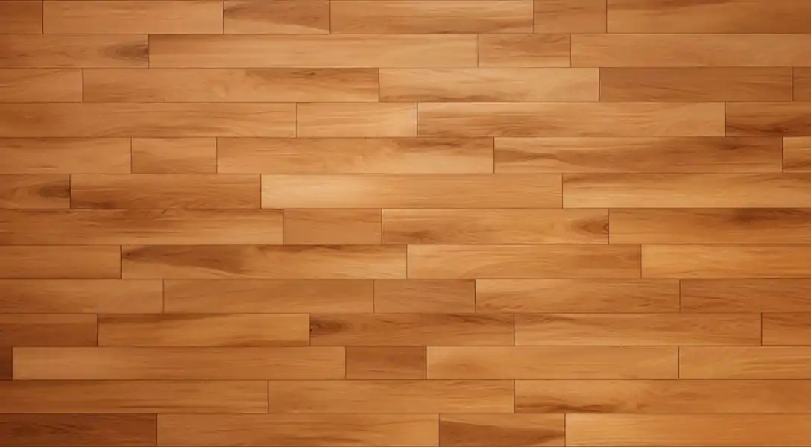

COMP 3420 – Final Programming Exam
Your browser does not support the HTML5 canvas element.
Controls
A / D or ← / →
Rotate the stack of objects left / right
W / S or ↑ / ↓
Move camera closer / farther
R
Reset camera and rotation